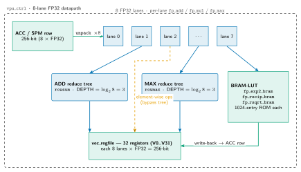
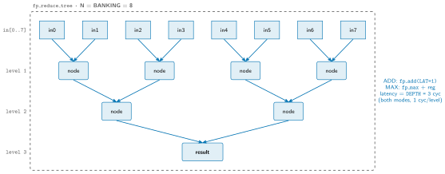

Lab 1: The Vector Processing Unit¶
ECE 4950/6950 AI Hardware, Fall 2026
School of Electrical and Computer Engineering, Cornell University
Lab 1: The Vector Processing Unit
Due: TBD, Fall 2026
Late submission: 4% penalty per day; cannot be late by more than 6 days.
Unverified against the RTL and ISA
This page was ported from a retired LaTeX handout without a technical review. The claims listed below have not been checked against the current RTL and ISA; they are the work list for the review tracked in issue #385. The rest of the page (motivation, exercises, tooling and submission steps) is pedagogy and needs no such check. The authoritative sources are the ISA Reference and the ABI Register Map.
Known wrong, not merely unverified. The vec.* mnemonics used below
(vec.rowsum, vec.mul.acc, vec.add.acc, vec.gelu, vec.exp2) belong
to a namespace that matches no generation of the ISA.
Unverified claims on this page.
- Instruction semantics and operand fields: what
vec.rowsum,vec.mul.acc,vec.add.acc,vec.gelu,vec.exp2andflushdo, and theacc_dst/acc_a/acc_b/vreg_dst/acc_srcoperand fields the three-instruction kernel in Part 2 uses. - Datapath geometry: eight lanes; one multiplier, adder and comparator per lane; a scratchpad row holding eight FP32 values; an accumulator tile of eight rows by eight FP32 values.
- Reduction tree:
fp_reduce_treeparameterizedN=8withOP="ADD"and anOP="MAX"mode; three pairwise levels; a three-cycle latency equal to that depth. - Lookup tables and their latency: that
fp_exp2_bram,fp_recip_bram,fp_rsqrt_bramandfp_tanh_bramexist; that thefp_tanh_bramread is registered and costs one cycle; that the GELU path has exactly one registered stage. - Provided FPU blocks:
fp_mul(claimed combinational),fp_add,fp_max, and the claim that ReLU is onefp_maxcomparison. - Module, signal and FSM-state names:
vpu_lane.sv,vpu_ctrl.sv,row_cnt,stage_cnt,VPU_REDUCE_ROW,VPU_ACC_ROW, the opcode-class entry-state dispatch, and the one-cycledonepulse. - Numeric format: that Lab 1 is FP32 end to end.
- Figure-borne claims:
vpu-datapathandvpu-reduceare frozen legacy SVGs with no TikZ source, so they cannot be re-rendered from a corrected source. The lane count, the per-lane unit set, the ADD/MAX tree shape and the three-level depth are asserted by the drawings as well as by the prose: checking the prose does not check the figures. - Suspect, check first: the Part 2 kernel comment says
vec.mul.acccomputes "all 64 products at once", while the surrounding text describes a row-sequential controller over an eight-lane datapath. At most one of these can be right.
Introduction¶
This is the first lab in building a neural-network accelerator, and your introduction to programming and building one. The subsystem you build is the Vector Processing Unit (VPU): the part of the accelerator that does element-wise and vector arithmetic. It multiplies and adds vectors lane by lane, sums a row of numbers down to a single value, and applies activation functions. Matrix multiplication, the other large piece of the accelerator, is the subject of Lab 2; here you build the vector math that surrounds it.
The VPU is a specialized datapath rather than a general-purpose processor. It has a SIMD lane array: a row of arithmetic lanes that each do the same operation on one element. From the lanes the data takes one of two paths. On the reduction path the lane results feed a reduction tree that combines them into a single value, which is how the dot product of Part 1 sums its per-lane products. On the element-wise path the lane results bypass the tree entirely: each lane computes its own result and writes it straight back, which is how the per-lane arithmetic and the activations work. A lookup table sits beside the lanes to handle nonlinear functions they cannot compute directly. This lane, tree, and lookup-table structure, with the two paths through it, is the central idea of the lab, and you build it up piece by piece.
The VPU executes vector instructions from a kernel. The introduction
document explains the programming model: a kernel is a short sequence of NPU
instructions that the hardware fetches, decodes, and executes. The VPU is the
unit that runs the vector instructions in that set. Among them are a row-sum
reduction (vec.rowsum, which sums the elements of a row to one value), the
element-wise arithmetic (vec.mul.acc and vec.add.acc, an
element-wise multiply and add over a tile), and the activations ReLU
(a maximum against zero) and GELU (vec.gelu). The same datapath also runs
the base-2 exponential vec.exp2 that the attention softmax uses in later
labs. The parts below build the hardware that decodes and executes these
operations.
You build the VPU in four parts, from the bottom up. First a single vector dot product. Then a loop that runs it over a tile of data resident in the on-chip scratchpad. Then the per-lane arithmetic and the activation functions. Finally you assemble these into one complete neural-network layer. The VPU you finish in this lab is the same vector unit used in the later labs; nothing here is a simplified stand-in. This lab is about the fundamentals of accelerator design, worked through a small handwritten-digit classifier rather than the full language model. Even so, the general vector engine you build is, in principle, enough to run that language model on its own: a matrix multiply is many dot products, and the activations and normalizations are vector operations. It would just not be efficient, which is why the later labs add a matrix unit to do the multiplies in bulk and a data-movement engine to keep it fed. The labs only vary in how much of each part is left for you to write.
Lab 1 runs in simulation and uses FP32 throughout. The course introduction
document (labs_introduction.pdf) describes the accelerator and its programming model,
the setup on the ecelinux servers, and how submission and grading work.
Read it first; this handout assumes it.
By the end of the lab you will understand how an accelerator is programmed, how a row of dedicated arithmetic units feeding a reduction tree forms the specialized datapath that computes a dot product, why a nonlinear activation is computed from a small lookup table added to that datapath, and how the whole structure composes into a neural-network layer.
Prerequisites. You should be comfortable with basic SystemVerilog
(modules, always_ff, genvar and generate) and Python, and
with basic floating-point arithmetic. No prior accelerator or
hardware-verification experience is assumed.
Materials¶
Your repository contains a skeleton that already compiles. Each part of the lab
is a small region inside otherwise complete, working code, marked with a
// TODO(lab1) comment; you fill in those regions and leave the surrounding
structure alone. The pieces are:
- The design files you edit, the real
npu/srcVPU per-lane datapath and its controller,vpu_lane.svandvpu_ctrl.sv. Every part fills// TODO(lab1)marker regions in these production modules (Part 1 the eight-lane dot-product reduction path, the later parts the per-lane arithmetic, activations, and layer control). The skeleton for these regions lands with the real-VPU scoop (#255, blocked by #180). Each file's header comment states what it does and which sub-modules it uses. - The provided arithmetic modules, which you do not edit, under
npu/src/compute_tile/fpu/. These are the floating-point primitives, already written and tested:fp_mul(multiply, combinational),fp_add(add),fp_max(the larger of two values), andfp_reduce_tree(a balanced reduction tree over a vector). The nonlinear functions are precomputed lookup tables in block RAM:fp_exp2_bram,fp_recip_bram,fp_rsqrt_bram, andfp_tanh_bram. You wire these blocks together; you do not implement floating-point arithmetic yourself. - The public tests, under
tests/, written with cocotb. These define and constitute your grade. Each part is graded by its own public test, shipped with the real-VPU scoop (#255, blocked by #180). Each test drives your design and compares its output against a numpy reference within a stated tolerance. - The handwritten-digit fixture that the final part runs on:
the sklearn
load_digits\(8\times8\) images (classes 0 through 7) and the trained weights of a tiny 64-32-8 classifier, committed astests/digits_0_7_weights.npzand used to drive the assembled layer end to end. It stands in for the MNIST-MLP concept at a scale that runs quickly in simulation; sklearn is only needed offline to regenerate it (tests/gen_digits_fixture.py), not at test time. - The
Makefile.make testbuilds the design with Verilator and runs the public tests.make cleanremoves build artifacts.make helplists the targets.
Everything else in the repository is provided and complete; you edit only the
// TODO(lab1) regions named above.
After cloning and loading the environment as described in the introduction document, run the test suite once to confirm the skeleton builds:
The build succeeds and the tests fail, because the TODO regions are still
empty. The autograder runs the same tests under the same pinned tool versions, so
the result you see locally is the result you are graded on.
Goal¶
You build one engine in four parts. Each part reuses what the previous one built: a dot product becomes a loop over a tile, the loop gains per-lane arithmetic and activations, and the whole thing composes into a layer. Fig. 1 shows the eight-lane datapath you are building, and Fig. 2 shows the reduction tree at the heart of Part 1.

Fig. 1.The VPU datapath. A row of the scratchpad holds eight FP32 values, one per lane, and each lane has its own multiplier, adder, and comparator. Two write-back paths are shown: the reduction path (lanes into the ADD/MAX trees, as in the Part 1 dot product) and the element-wise bypass (per-lane results straight to write-back), the path the element-wise arithmetic and the activations use. A set of block-RAM lookup tables beside the lanes handles the nonlinear functions. You build this datapath up over the four parts of the lab.
Part 1: an eight-lane dot product¶
The first part builds the reduction path at its smallest: a single dot product of two eight-element vectors, \(\text{result} = \sum_{i=0}^{7} a_i\,b_i\). This is the smallest complete piece of the VPU, and it is the canonical shape of accelerator arithmetic: a row of multipliers (the SIMD lane array) feeding a reduction tree of adders, the lanes producing the per-element products and the tree collapsing them to one value.
You complete the eight-lane dot-product (reduction) path in the real VPU per-lane
datapath (vpu_lane.sv/vpu_ctrl.sv). The work is structural wiring,
not arithmetic.
Inside a generate loop you instantiate one fp_mul per lane, so that
lane \(i\) computes prod[i] = a[i] * b[i]. You then instantiate one
fp_reduce_tree, parameterized with N=8 and OP="ADD", that
sums the eight products into the single output result. Both sub-modules are
provided and tested; the module header lists their ports.

Fig. 2.The reduction tree (fp_reduce_tree with
N=8). Eight inputs are summed pairwise over three levels, each level a
row of adders. Because the tree has \(\lceil\log_2 8\rceil = 3\) levels, the
architectural latency from stable inputs to a valid result is three cycles. The
same tree in MAX mode computes a row maximum, used by the attention
softmax in later labs.
The idea to take away from Part 1 is the dedicated specialized datapath.
A dot product is not run as a sequence of general-purpose instructions; it is wired
directly in hardware as a row of per-lane multipliers feeding a reduction tree.
The lanes do all the multiplies at once, and the tree collapses their results in a
fixed structure. This lane-and-tree shape is what the rest of the lab extends: a
lookup table is added to it in Part 3 for nonlinear functions, and the whole thing
is driven over a tile in Part 2. As a practical detail, the reduction tree is
registered, so its result is valid a fixed number of cycles after its inputs are
stable (three cycles for eight inputs). The test for this part holds the inputs
steady, waits, and then samples result; later parts have a controller that
must account for this delay itself.
The public test for this part compares your output against numpy's dot product. The comparison uses a tolerance (a relative tolerance of \(1\times10^{-5}\) and an absolute tolerance of \(1\times10^{-4}\)), not exact equality. This is deliberate. Your hardware sums the products with a balanced tree, rounding to FP32 at each adder, while numpy accumulates in a different order; the two correct results differ by a few units in the last place. The bar is correct wiring, not bit-for-bit agreement with numpy.
Part 2: a tile loop over the scratchpad¶
Part 2 stays on the reduction path and turns the single dot product into a loop that runs it over every row of a tile resident in the scratchpad. A real intermediate tensor in a network is far larger than the on-chip memory, so it is worked on in pieces. A tile is one such piece: a chunk of the larger tensor, sized to fit the scratchpad and shaped to the fixed datapath that processes it. Here the tile the VPU works on is an accumulator tile of eight rows, each eight FP32 values wide, matching the eight lanes. Instead of one vector presented on the inputs, the data lives in the scratchpad, and a small controller reads it one row at a time, runs the row through the datapath, and advances to the next row until the tile is done.
You complete the loop control in vpu_ctrl.sv. This controller is built
around two counters: row_cnt, which selects the current scratchpad row,
and stage_cnt, which counts the pipeline stages within the operation on
that row. You write the counter advance (driving the read address from the
current row, stepping stage_cnt through the pipeline, and detecting that
the tile is finished when the last row has been processed). The dot product from
Part 1 is reused unchanged as the per-row computation. The file header documents
the controller's states and how the two counters drive them.
The idea here is how a counter-driven loop streams a tile through a fixed datapath: the data is on chip under the scratchpad model from the introduction document, so the controller walks over it at known addresses, on a known cycle schedule.
The testbench plays the host copy step from the introduction document: it loads the operand tiles into the scratchpad before the kernel runs and reads the results back afterward, so the kernel itself never copies data to or from DRAM. Suppose you want, for two eight-by-eight tiles \(A\) and \(B\), the eight numbers \(d_r = \sum_{j} A[r,j]\,B[r,j]\): one dot product per row, eight in all. With the two operand tiles already in the accumulator, that computation reads, in the device's assembly, as three instructions:
; (testbench loads the two operand tiles into ACC[0] and ACC[1])
; ACC[2][r,j] = ACC[0][r,j] * ACC[1][r,j] (all 64 products at once)
vec.mul.acc acc_dst=2, acc_a=0, acc_b=1
; VREG[0][r] = sum over j of ACC[2][r,j] (one dot product per row)
vec.rowsum vreg_dst=0, acc_src=2
; wait for the pipeline to drain, then stop
flush
Read it line by line. The two operand tiles sit in accumulator tiles 0 and 1,
placed there by the testbench. vec.mul.acc multiplies them entry by entry
and writes the \(8\times8\) products into accumulator tile 2; this runs on the
element-wise path, where each lane produces one independent result and
no value crosses between lanes. vec.rowsum then runs the reduction
path: for each of the eight rows it feeds that row's eight products through the
reduction tree, collapsing them to a single sum, and writes the eight
per-row results into vector register 0. The output VREG[0] therefore holds
the eight per-row dot products, one per row of the tile. flush ends the
program. The whole computation is three instructions operating on
scratchpad-resident data; that is what "launching a kernel" means. The part is
graded by its cocotb test against a numpy reference in the same FP32 tolerance
class as Part 1.
Part 3: per-lane arithmetic and activations¶
Part 3 builds the element-wise path: the arithmetic each lane performs on
its own element and the activation functions applied to the result. Parts 1 and 2
used the reduction path, per-lane products summed by the
reduction tree. But the VPU does more than dot products, and the rest of
its work is element-wise, one independent result per lane, with no reduction. On
the element-wise path each lane writes its own result straight back, bypassing the
tree entirely. You work inside vpu_lane.sv, the per-lane datapath. Three
pieces:
- The element-wise arithmetic, an element-wise multiply and add on
the accumulator tile (
vec.mul.accandvec.add.acc). You wire the lane's multiplier and adder, using the providedfp_mulandfp_add, so each lane computes its own product or sum and writes it straight back, not through the tree. This is the work behind most of a layer: multiplying two tensors element by element, and adding the bias in \(W x + b\), which is an element-wise add (vec.add.acc), not a dedicated bias operation. Part 4 uses these to compose the layer. - ReLU, the activation \(\text{ReLU}(x)=\max(x,0)\). This needs no
table: it is one comparison, computed with the provided
fp_maxagainst zero. - GELU, the activation used in the model these labs target. Unlike
ReLU, GELU is a smooth nonlinear curve, and it is computed from a
lookup table. The lane evaluates the tanh-based approximation
\(\text{gelu\_new}(x) = 0.5\,x\,(1 + \tanh(\sqrt{2/\pi}\,(x + 0.044715\,x^3)))\)
in four steps. First, on the shared lane multiplier and adder (the same
fp_mulandfp_addyou wired above), form the cubic polynomial \(p = x + 0.044715\,x^3\). Second, scale it by \(\sqrt{2/\pi}\) to get the argument \(z = \sqrt{2/\pi}\,p\). Third, look up \(\tanh(z)\) in the providedfp_tanh_bramtable. Fourth, recombine as \(0.5\,x\,(1 + \tanh(z))\). Thefp_tanh_bramread is registered, so \(\tanh(z)\) arrives one cycle after \(z\); the combinational steps before and after it must be aligned to that one-cycle read. You wire this path; the table itself is provided.
The point of Part 3 is the contrast between a cheap activation and a table-based one, and the latency that a table introduces. ReLU is a single combinational comparison. GELU's table lookup is a registered block-RAM read that takes a cycle, so its result arrives one cycle after its input. The surrounding lane logic must be aligned so that the table's output meets the rest of the computation on the right cycle. Getting that alignment wrong is the most common mistake in this part. The cocotb test checks the element-wise multiply and add and ReLU against numpy in the FP32 tolerance class, and checks GELU against a reference with a tolerance sized to the table's quantization (the table holds a finite number of entries, so its output is an approximation).
Part 4: a complete layer¶
Part 4 composes both paths into one neural-network layer:
\(y = \text{act}(W x + b)\), a matrix-times-vector product, plus a bias, followed by
an activation. The matrix product \(W x\) runs on the reduction path, the
dot product of Part 1 looped over the rows of \(W\) from Part 2; the bias add and
the activation run on the element-wise path from Part 3. You build the
top-level control in vpu_ctrl.sv that sequences these pieces. Reusing the
row_cnt and stage_cnt counters from Part 2, it walks the rows of
\(W\) to compute \(W x\) on the reduction path (one vec.rowsum per row,
entering through the VPU_REDUCE_ROW state), then adds the bias with an
element-wise vec.add.acc on the element-wise path (the VPU_ACC_ROW
state), then applies the activation. The path-select is the entry-state dispatch
keyed on the opcode class, and within a row the per-op stage_cnt terminal
holds the stage long enough to cover each block's latency. The layer output is
valid when the last row's activation has been written back: row_cnt
reaches the tile's last row, the writeback completes, and done pulses for one
cycle.
This is a real layer of the worked example for Lab 1, a small multi-layer
perceptron (MLP) that classifies handwritten digits: the sklearn
load_digits \(8\times8\) images (classes 0 through 7), a compact stand-in
for the MNIST-MLP concept. The small dataset keeps this end-to-end example easy
to verify; the same datapath runs the transformer layers of the later labs. The
assembled layer runs on the digit data from the fixture in Materials: a digit
image is the input vector \(x\), and the layer produces the next vector of
activations. Running it exercises the full datapath you built: the lanes, the
reduction tree, the per-lane arithmetic, and the activation, all driven over a
tile. The part is graded by its cocotb test against a numpy reference on the small
layer used in simulation.
Guidelines and Hints¶
Coding and debugging¶
- Each
// TODO(lab1)region sits inside code that is already compiled and correct around it. Do not change the providedfp_*modules, the module ports, or the surrounding structure; the autograder depends on them. - Run
make testoften. Each part has its own test, so you can develop one part at a time and watch a test go from failing to passing. - When a test fails, look at the waveform:
make testwrites a VCD file you can open in a waveform viewer. Most bugs in this lab are off-by-one latency errors, where a pipelined result is sampled a cycle too early or too late. The fix is to count the cycles a block takes and align to it. - Floating-point comparisons use a tolerance, not equality. Do not try to match numpy bit for bit; the reduction order legitimately differs. Match the relative and absolute tolerances the test states.
Latency and the lookup tables¶
- The reduction tree in Part 1 has a latency equal to its depth, three cycles for eight inputs, because each of its three levels is registered. The block-RAM table reads in Part 3 add a cycle each. Whenever you instantiate a registered block, find its latency in the module header and make the surrounding control wait that many cycles.
- The GELU path in Part 3 has exactly one registered stage, the
fp_tanh_bramread. The rest of the GELU arithmetic is combinational. Align the path so the table's one-cycle output lines up with the combinational parts; this is the single most common Part 3 error.
Deliverables¶
Submit through your course git repository as described in the introduction
document. Include in your repository the
design files you edited (vpu_lane.sv and vpu_ctrl.sv; only the
files you changed) and your report as
report.pdf. Do not commit build artifacts or the sim_build/
directory.
Report¶
Write about one page, single column, with figures or tables where they help (captions required). Describe the VPU you built as a whole and discuss its design trade-offs: the lane-and-tree datapath structure (why a row of lanes feeding a reduction tree is the right shape for this arithmetic, and how the tree's depth sets its latency), the tile loop (how the two-counter controller streams rows of the scratchpad through that datapath on a known schedule), the activations (the contrast between ReLU, which needs no table, and the table-based GELU, including how accurate the table approximation is relative to the exact function and what a larger table would cost in on-chip memory and latency), and the layer (how the pieces compose into \(y = \text{act}(W x + b)\) over the digit data). Pick the trade-offs you found most significant rather than covering every point exhaustively.
Acknowledgement¶
This lab is built on the mininpu, a composable tensor-accelerator hardware template developed for research and adapted here for teaching. The skeleton, the floating-point modules, and the testbench are drawn from the same design that runs in the full accelerator.
References¶
- Course introduction and setup,
labs_introduction.pdf. - cocotb documentation, https://docs.cocotb.org/.
- Verilator manual, https://verilator.org/guide/.